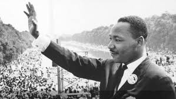

Martin Luther King, Jr. was a social activist and Baptist minister who played a key role in the American civil rights movement from the mid-1950s until his assassination in 1968. King sought equality and human rights for African Americans, the economically disadvantaged and all victims of injustice through peaceful protest. He was the driving force behind watershed events such as the Montgomery Bus Boycott and the 1963 March on Washington, which helped bring about such landmark legislation as the Civil Rights Act and the Voting Rights Act. King was awarded the Nobel Peace Prize in 1964 and is remembered each year on Martin Luther King, Jr. Day, a U.S. federal holiday since 1986.Did you know? The final section of Martin Luther King, Jr.’s eloquent and iconic “I Have a Dream” speech is believed to have been largely improvised.
A gifted student, King attended segregated public schools and at the age of 15 was admitted to Morehouse College, the alma mater of both his father and maternal grandfather, where he studied medicine and law.
Although he had not intended to follow in his father’s footsteps by joining the ministry, he changed his mind under the mentorship of Morehouse’s president, Dr. Benjamin Mays, an influential theologian and outspoken advocate for racial equality. After graduating in 1948, King entered Crozer Theological Seminary in Pennsylvania, where he earned a Bachelor of Divinity degree, won a prestigious fellowship and was elected president of his predominantly white senior class.
King then enrolled in a graduate program at Boston University, completing his coursework in 1953 and earning a doctorate in systematic theology two years later. While in Boston he met Coretta Scott, a young singer from Alabama who was studying at the New England Conservatory of Music. The couple wed in 1953 and settled in Montgomery, Alabama, where King became pastor of the Dexter Avenue Baptist Church.
They had four children: Yolanda Denise King, Martin Luther King III, Dexter Scott King and Bernice Albertine King.
When Was Martin Luther King Born?
Martin-Luther-King-jr.
Martin Luther King, Jr. was born on January 15, 1929, in Atlanta, Georgia, the second child of Martin Luther King Sr., a pastor, and Alberta Williams King, a former schoolteacher.
Along with his older sister Christine and younger brother Alfred Daniel Williams, he grew up in the city’s Sweet Auburn neighborhood, then home to some of the most prominent and prosperous African Americans in the country. Did you know? The final section of Martin Luther King, Jr.’s eloquent and iconic “I Have a Dream” speech is believed to have been largely improvised
Mountain Top Moments

A gifted student, King attended segregated public schools and at the age of 15 was admitted to Morehouse College, the alma mater of both his father and maternal grandfather, where he studied medicine and law.
Although he had not intended to follow in his father’s footsteps by joining the ministry, he changed his mind under the mentorship of Morehouse’s president, Dr. Benjamin Mays, an influential theologian and outspoken advocate for racial equality. After graduating in 1948, King entered Crozer Theological Seminary in Pennsylvania, where he earned a Bachelor of Divinity degree, won a prestigious fellowship and was elected president of his predominantly white senior class.
King then enrolled in a graduate program at Boston University, completing his coursework in 1953 and earning a doctorate in systematic theology two years later. While in Boston he met Coretta Scott, a young singer from Alabama who was studying at the New England Conservatory of Music. The couple wed in 1953 and settled in Montgomery, Alabama, where King became pastor of the Dexter Avenue Baptist Church.
They had four children: Yolanda Denise King, Martin Luther King III, Dexter Scott King and Bernice Albertine King.
Montgomery Bus Boycott